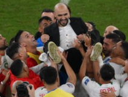
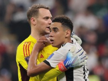
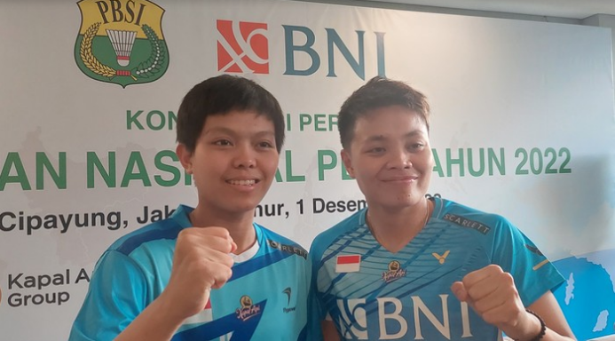

BlueSport.com
Berita Olahraga

Berita Terbaru
Wow! Maroko Belum Terkalahkan Sejak Dibesut Walid Regragui
Selengkapnya Jerman di Piala Dunia 2022: Dari Aksi Tutup Mulut hingga Gugur Lebih Awal
SelengkapnyaDebutan World Tour Finals, Begini Cara Fadia Redam Antusiasme
Diposting pada 08:24 WIB, 02 Desember 2022 Jakarta - Ganda putri Indonesia Siti Fadia Silva Ramadhanti senang bisa mendapat kesempatan main di BWF World Tour Finalis 2022. Dia bertekad untuk...
Selengkapnya